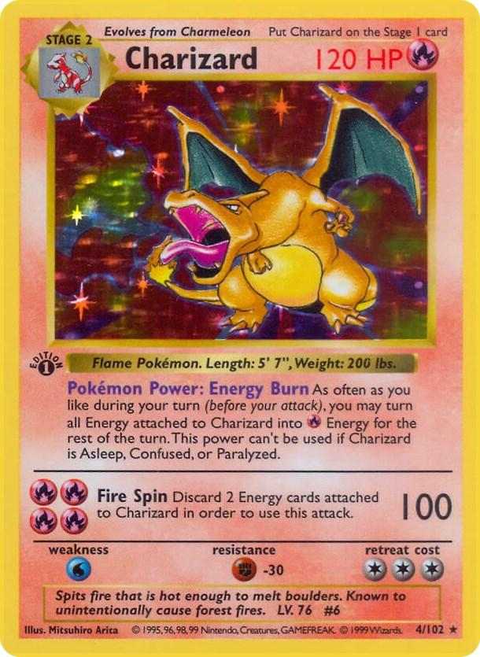

| Czym są Pokemony Seriale Pokemon Gry Pokemon Karty Pokemon Moje ulubione Pokemony Kontakt |
Kolekcjonerska gra karcianaKarty kolekcjonerskie Pokémon są jednym z najbardziej kultowych elementów marki i mają długą, fascynującą historię. Zadebiutowały w 1996 roku w Japonii, wkrótce po premierze gier wideo, i szybko stały się światowym fenomenem. Każda karta przedstawia różne Pokémony, ich ataki, zdolności i statystyki, co czyni je nie tylko przedmiotami kolekcjonerskimi, ale też podstawą gry karcianej, w której gracze rywalizują, tworząc swoje własne talie. Dla wielu osób, w tym dla mnie, zbieranie kart to pasja, która łączy miłość do Pokémonów z radością odkrywania rzadkich, cennych egzemplarzy. W mojej kolekcji znajdują się karty z różnych serii, w tym klasyczne karty z pierwszych zestawów, które obecnie osiągają zawrotne ceny na rynku kolekcjonerskim. Zwłaszcza karty holograficzne, przedstawiające takie ikony jak Charizard czy Mewtwo, mają ogromną wartość zarówno emocjonalną, jak i rynkową. Gra karciana Pokémon TCG (Trading Card Game) stała się z biegiem lat nie tylko popularną formą rozrywki, ale również poważną dyscypliną esportową. Turnieje odbywają się na całym świecie, a mistrzowie zdobywają prestiżowe nagrody i tytuły. Każdy nowy zestaw kart wprowadza innowacje, nowe mechaniki i unikalne Pokémony, co nieustannie pobudza zainteresowanie zarówno wśród starych, jak i nowych graczy. Jako kolekcjoner chętnie wymieniam się kartami z innymi pasjonatami, stale poszukując brakujących elementów do swojej kolekcji. Zbieranie kart Pokémon to nie tylko hobby, ale także sposób na nawiązanie kontaktu z innymi fanami i dzielenie się wspólną pasją. Jeśli jesteś zainteresowany wymianą, daj znać – może uda nam się znaleźć coś, co uzupełni nasze zbiory! |
| Autor: Michał Kutryb 169326 |